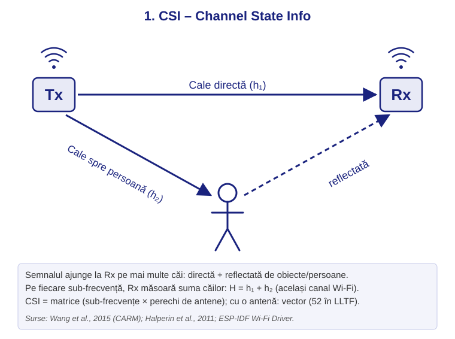
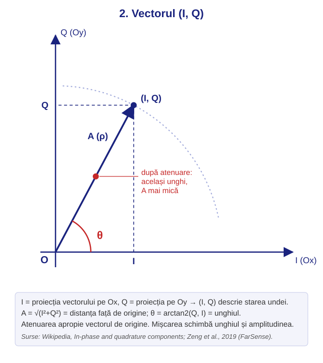
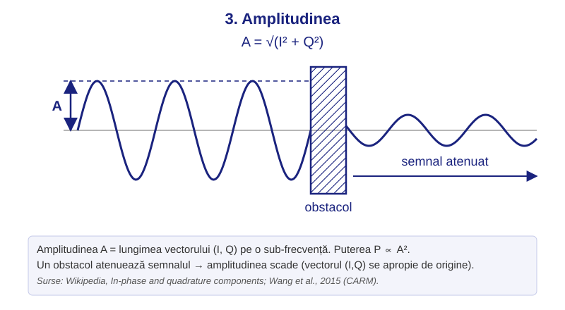
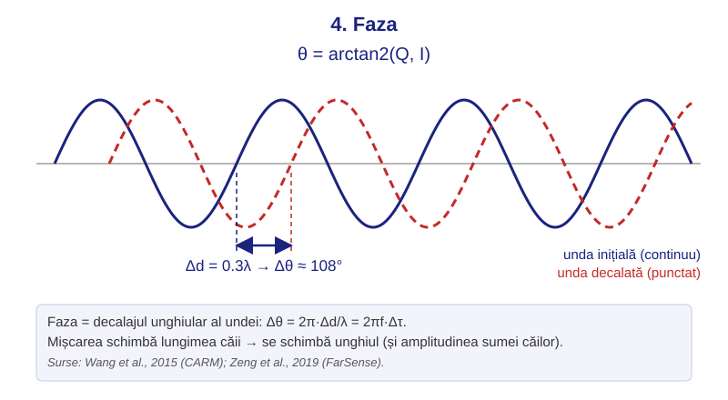

Licență – notițe 5 Nov 2026, cu sursele în paralel
Stânga: notițele. Dreapta: dovada din sursă, cu textul evidențiat. Apasă pe un text galben ca să vezi sursa lui. Apasă pe o captură ca să deschizi pagina întreagă.
Text galbenn = afirmație cu dovadă în cardul n. Text subliniat punctat = calcul propriu, fără sursă separată. [n] = numărul sursei din lista de la finalul notițelor (Status_5Nov_2026_final.md). Textul între ghilimele „…” este citat exact. „[…]” marchează un fragment omis. Notele de subsol din citate (de exemplu „[1]” din Wikipedia) sunt omise. Butonul din antet schimbă citatele între originalul în engleză și traducerea mea, marcată „(trad. proprie)”. Traducerea nu este citat exact. Referința rămâne originalul.
1. CSI (Channel State Information)

Între Tx și Rx există o cale directă (contribuția h₁).
Semnalul se reflectă pe o persoană și ajunge la Rx pe o cale reflectată (contribuția h₂).
Ambele căi folosesc același canal Wi-Fi și aceleași sub-frecvențe.
Pe fiecare sub-frecvență, Rx primește suma tuturor căilor: H(f) = Σₖ aₖ·e^(−j2πfτₖ). aₖ este coeficientul complex al căii k (atenuare și defazaj). τₖ = dₖ/c este întârzierea căii k [1]1.
f este frecvența sub-frecvenței măsurate: f = f_c + n·Δf.
f_c = centrul canalului. Exemplu: canalul 6 are f_c = 2437 MHz [6]3.
n = indicele sub-frecvenței (−26…+26 pentru LLTF).
Δf = distanța dintre centrele a două sub-frecvențe vecine = 312,5 kHz [5]2.
Exemplu: pe canalul 6, n = +10 dă f = 2437 MHz + 10 × 0,3125 MHz = 2440,125 MHz.
Suma dă un singur număr complex, adică H = I + jQ din secțiunea 2: I = Σₖ |aₖ|·cos(φₖ), Q = Σₖ |aₖ|·sin(φₖ), cu φₖ = faza totală a căii k.
Receptorul eșantionează la 20 MHz și aplică un FFT [5]2. Cu Δf = 0,3125 MHz, FFT-ul are 20 MHz / 0,3125 MHz = 64 de poziții.
Câmp pe ESP32
Sub-frecvențe active
LLTF (802.11a/g)
52, de la −26 la +26 [3]4
HT-LTF (802.11n, 20 MHz)
56, de la −28 la +28 [3], [7]5,6
Intervalul −26…+26 are 53 de poziții, dar sursa dă 52. Poziția lipsă este 0 (DC). Sursa nu spune explicit acest lucru.
CSI este un set de valori complexe: o valoare pentru fiecare sub-frecvență și pentru fiecare pereche de antene Tx–Rx [7]7.
În general, CSI este o matrice: sub-frecvențe × perechi de antene.
ESP32 are un singur lanț de recepție (o antenă activă). CSI din LLTF este deci un vector de 52 de numere complexe.
Bufferul LLTF de pe ESP32 are 64 de intrări (indicii 0~31 și −32~−1) și 128 de octeți [3]8. Intrările nule sunt incluse și trebuie eliminate. 64 × 2 octeți = 128.
Pe ESP32, primii 4 octeți din buffer pot fi invalizi. Câmpul first_word_invalid arată acest caz [3]8. 4 octeți = primele 2 intrări.
CSI nu este o măsurătoare exactă. Faza brută are erori de sincronizare [9]10.
2. Amplitudinea și Faza
Pentru fiecare sub-frecvență, chipul Wi-Fi dă un număr complex:
H = I + jQ. I = partea reală, Q = partea imaginară [4]11
I = componenta în fază.
Q = componenta în cuadratură, defazată cu 90°.
I și Q sunt coordonatele carteziene (x, y) ale unui vector.
I este proiecția vectorului pe Ox.
Q este proiecția vectorului pe Oy.
(I, Q) descrie starea undei la momentul măsurării.
ESP32 păstrează câte 2 octeți cu semn pe sub-frecvență. Primul octet este partea imaginară (Q). Al doilea octet este partea reală (I) [2]12. Nu citi perechea ca (I, Q).

Amplitudinea
A = |H| = √(I² + Q²) (modulul unui număr complex)
Amplitudinea este lungimea vectorului (I, Q).
Puterea este pătratul amplitudinii: P = |H|² = I² + Q². CARM scrie puterea CFR în forma |H(f, t)|² [8]13.
Atenuarea prin obstacole reduce lungimea vectorului.

Faza
θ = arctan2(Q, I)
arctan2(y, x) dă unghiul vectorului (x, y) față de axa Ox [1]14. Pentru H, x = I și y = Q.
Faza este un unghi. Ea arată întârzierea undei față de o referință.
Legătura cu întârzierea τ și cu lungimea căii d: θ = 2πfτ = 2πd/λ [8]15.
Când lungimea căii se schimbă cu o lungime de undă λ, faza se schimbă cu 2π [8], [9]15,16.
Sursele scriu exponentul cu semnul minus: e^(−j2πfτ) [1], [8]. Folosește aceeași convenție în toată teza.

Efectul mișcării
Deplasarea unui obiect schimbă lungimea căii reflectate.
CSI este suma unei componente statice și a unei componente dinamice. Componenta dinamică are fază variabilă [9]16.
Mișcarea schimbă deci unghiul vectorului total și amplitudinea lui.
Atenție: Nu folosi faza brută ca măsură a distanței. SFO, CFO și întârzierea de detecție a pachetului (PDD) deformează faza [9]10. Corectează faza înainte de analiză.
Pe plăcile cu mai multe antene există și offseturi de fază între lanțurile RF [10]9. ESP32 are un singur lanț de recepție. Deci offsetul dintre antene nu apare pe ESP32.
Notes
ce fac funcțiile cu regiștrii de control.
cum se modif. param. de recepție.
de studiat ce face biblioteca.
→ cum le trec în studiu bibliografic.
Primul capitol mare zice de fizică, conceptual, cum scoate funcția chestiile din bibliotecă.
De documentat și generale, analizat datele, nu ca să dovedesc că s-a întâmplat x, y.
! de documentat cum scoate funcția din controllerul de wireless cu biblioteca etc.